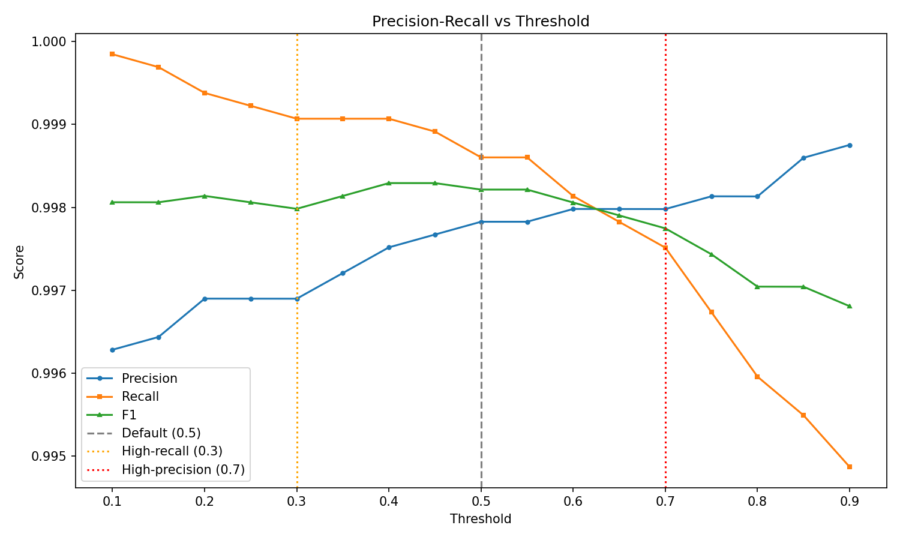
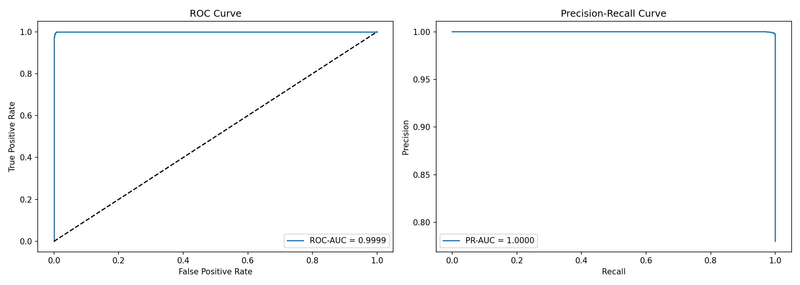
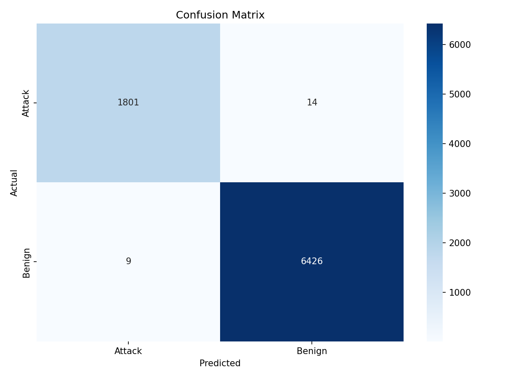
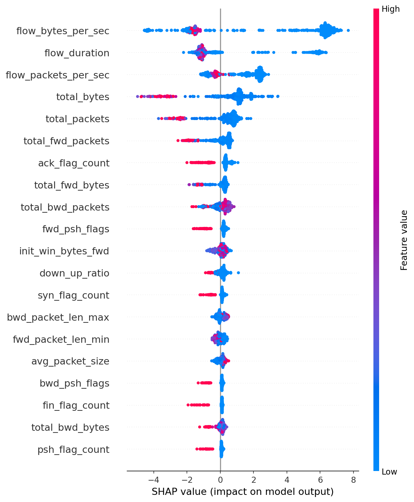

MODEL EVALUATION REPORT
Dataset: CICIDS2017-style Network Traffic | Model: xgboost
Performance Metrics
| Metric | Value |
|---|
| accuracy | 0.9972 |
| precision | 0.9972 |
| recall | 0.9972 |
| f1 | 0.9972 |
| false_positive_rate | 0.0077 |
| false_negative_rate | 0.0014 |
| cost_sensitive_f1_fn2 | 0.9982 |
| roc_auc | 0.9999 |
| pr_auc | 1.0000 |
Model Comparison
| Model |
Accuracy |
Precision |
Recall |
F1 |
ROC-AUC |
PR-AUC |
Training Time |
Inference ms/sample |
| Random Forest |
0.9965 |
0.9965 |
0.9965 |
0.9965 |
0.9999 |
1.0000 |
see log |
0.0098 |
| Xgboost |
0.9972 |
0.9972 |
0.9972 |
0.9972 |
0.9999 |
1.0000 |
see log |
0.0020 |
| Neural Network |
0.9930 |
0.9930 |
0.9930 |
0.9930 |
0.9994 |
0.9998 |
see log |
0.0025 |
Threshold Analysis
Recommended threshold: 0.40000000000000013
Threshold 0.40 balances high recall for threat detection with acceptable precision.

ROC & PR Curves

Confusion Matrix

SHAP — Top Features
- flow_bytes_per_sec (mean |SHAP| = 4.5483)
- flow_duration (mean |SHAP| = 1.8780)
- flow_packets_per_sec (mean |SHAP| = 1.5720)
- total_bytes (mean |SHAP| = 1.4058)
- total_packets (mean |SHAP| = 0.8490)
- total_fwd_packets (mean |SHAP| = 0.5137)
- ack_flag_count (mean |SHAP| = 0.4839)
- total_fwd_bytes (mean |SHAP| = 0.3775)
- total_bwd_packets (mean |SHAP| = 0.3593)
- fwd_psh_flags (mean |SHAP| = 0.3157)

Local Explanations
true_positive_1: Correctly flagged as malicious because flow_bytes_per_sec increased suspicion (SHAP=6.121); flow_packets_per_sec increased suspicion (SHAP=2.390); flow_duration decreased suspicion (SHAP=-1.002).
true_positive_2: Correctly flagged as malicious because flow_bytes_per_sec increased suspicion (SHAP=6.189); flow_packets_per_sec increased suspicion (SHAP=2.221); total_bytes increased suspicion (SHAP=1.287).
false_positive_1: Incorrectly flagged as attack because flow_bytes_per_sec increased suspicion (SHAP=3.456); total_bwd_packets decreased suspicion (SHAP=-1.472); flow_packets_per_sec increased suspicion (SHAP=1.357).
false_positive_2: Incorrectly flagged as attack because total_bytes increased suspicion (SHAP=2.955); flow_duration decreased suspicion (SHAP=-1.479); fwd_psh_flags decreased suspicion (SHAP=-1.199).
false_negative_1: Missed attack because flow_bytes_per_sec decreased suspicion (SHAP=-3.789); total_bytes increased suspicion (SHAP=1.650); bwd_psh_flags decreased suspicion (SHAP=-1.467).
Error Analysis
False Positives: 14 | False Negatives: 9
- False positives often show unusual values in: subflow_fwd_bytes, total_fwd_bytes, total_bytes, total_packets, total_fwd_packets
- False negatives may indicate evasion — consider retraining with adversarial samples.
- Monitor feature drift monthly and retrain with new attack samples.
Production Readiness
Verdict: APPROVED
Inference: 0.0189 ms/sample | Size: 0.45 MB
Robustness: 0.9972 → 0.6044 under noise